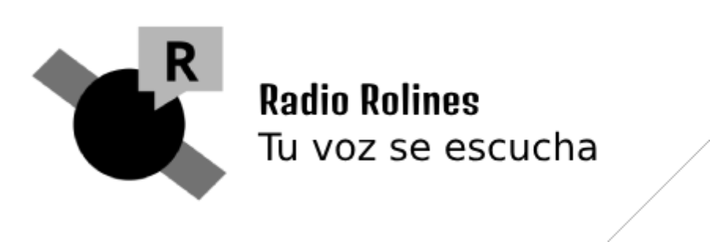

Programas
Noticias
Redes Sociales
96.3FM en Roquinia
Programas en Vivo
Tu navegador no soporta el elemento de audio.
Últimas Noticias
Noticia importante
Detalles de la noticia...
Síguenos en redes sociales
Facebook
Twitter